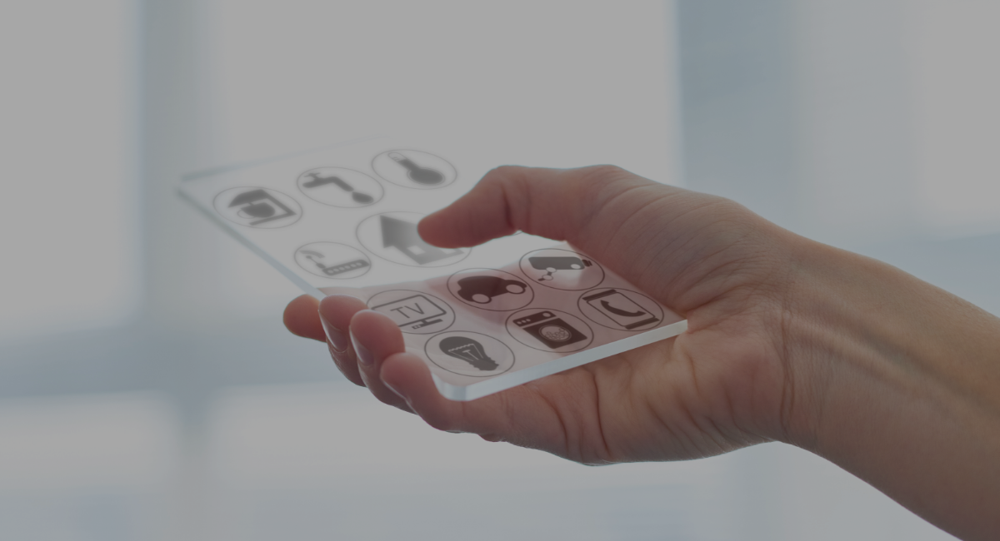
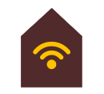

WELCOME TO LOT CONNECTED HOME
未來科技，有人視之為一種前瞻性預言，基礎理論少，幻想成分多。其實科技發展一日千里，所謂「未來」，有時近在眼前。上世紀九十年代才開始普及的互聯網，短短二十年間已改變世界，讓人與人的聯繫變得輕而易舉；展望下一步，是人與物件，甚至物件與物件之間的連繫。
物聯網Internet of Things（IoT）正是這個時代下的產物，物件與人類和環境互動，根據預設數據和使用習慣累積成自主意識。
應用在生活層面，窗簾、雪櫃、花灑、咖啡機都會成為使用者的貼身助手或家庭總管，了解家中各人的日常習慣、飲食喜好以至身體狀況，為生活帶來更多便利。智能家居的發展，或者你不太了解，或者你正在猶豫，但科技步伐愈走愈快，生活已進入翻天覆地的革新階段，是時候做好準備，迎接新時代的來臨。
以人為本
未來，雖然難以估計，但互聯網早已融入日常生活，IoT亦來勢洶洶，預料會在智能家居、醫療、電動車、保安、能源管理、娛樂等各方面帶來前所未有的巨大轉變。
今時今日，運用手機應用程式，監察和控制家中不同智能裝置的智能家居隨處可見。今年大量湧現的語音控制家具，透過語音辨識功能聲控不同智能家電。更進一步的IoT生活是，所有智能裝置自行互相感應及調配，為用家預先設定最適合的功能，例如智能雪櫃準確識別冷藏食物的種類、提示有效食用限期，甚至根據用家的BMI指數擬定每日餐單，缺貨時列出購物清單，自動為用家在網上超市補貨。
智能家居不限於一室之內，加上AI、VR和AR足以連接世界，讓用戶與遠方的親友互通互動。在現時的VR大戰中，科技公司正研究模擬不同物體的觸感技術，安坐家中的爺爺嫲嫲，只要利用VR裝置，不但能即時與身在外地升學的孫兒見面，甚至可以「牽手」、「擁抱」，享受團聚的時光。
現今的科技正朝着這種以人為本的智能模式進發。要盡量享受科技成果，可以聘請擅長智能整合系統的System Integrator，妥善將IoT、智能家居裝置與設計美學和諧融合，締造健康、舒適、便捷、安全、永續的家居環境，以科技優化生活。
家居網絡設計
IoT的重點在於「聯」，縱使產品設計再優秀尖端，沒有高速、安全、穩定的網絡支援無縫連接或無線裝置，再高科技亦形同虛設，因此光纖網絡是整個智能家居的核心，透過Wi-Fi網絡，將單層、複式、多層住宅單位完整覆蓋，讓你一機在手甚至機械人管家，輕易掌握家中智能設備。
迎接智能家居，一切從規劃開始。完善的家居網絡設計最為重要。以個別單位和用戶需求為本，周全考慮單位每個角落的連線模式和分佈，完美配合今日甚至將來更多更新的IoT產品出現，輕鬆打造舒適自主的生活體驗。
-

如何為智能家居做好準備﹖
-
揀選高速及穩定的真正光纖網絡。HKT提供高達10G光纖入屋寬頻，以及全新4 X 1000M多連接寬頻服務，滿足不同家庭成員需要。
-
根據家居圖則及個人需要，裝修期間預早規劃有線及無線的「家居網絡設計」。
-
尋求專才協助，讓System Integrator有系統整合IoT裝置。
-
物色一位熟悉IoT發展的建築設計師或室內設計師，美化家居之餘，輕鬆體驗科技帶來的享受。
©PCCW-HKT Datacome